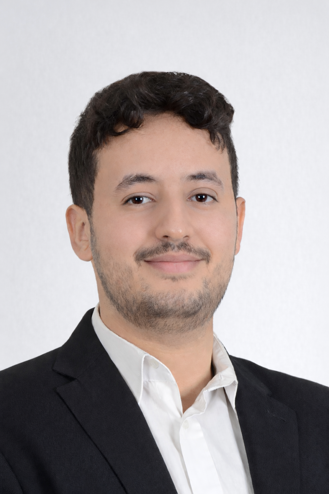

Futur étudiant en Master Bases de Données & Intelligence Artificielle
Étudiant en informatique à l’Université de Bourgogne, futur étudiant en Master Bases de Données & Intelligence Artificielle, je développe des applications fullstack et conçois des solutions data allant du développement logiciel à l’analyse et au traitement de données. Mon objectif est de construire des systèmes performants combinant backend, bases de données, data engineering et intelligence artificielle.

Étudiant en informatique orienté data, développement logiciel et ingénierie logicielle. Je m’intéresse au développement fullstack, à la data analyse, au machine learning, au data engineering et à la création de solutions concrètes combinant applications, bases de données, automatisation et visualisation.
Assistant intelligent orienté recherche documentaire, avec traitement de données, analyse et interaction utilisateur.
Tech stack: Python, IA, traitement de données
💻 GitHubApplication web full-stack permettant de gérer les réservations d’un restaurant avec interface dynamique et logique métier côté serveur.
Tech stack: PHP, MySQL, HTML, CSS, JavaScript
💻 GitHubApplication Java développée avec NetBeans selon le pattern MVC, avec gestion de panier, modélisation UML et tests unitaires.
Tech stack: Java, MVC, JUnit, Mockito, UML, Git
💻 GitHubApplication client-serveur en C avec sockets TCP, gestion multi-clients, threads et synchronisation des échanges réseau.
Tech stack: C, Sockets TCP, Threads, Client-Serveur
💻 GitHubImplémentation d’algorithmes sur les graphes : structures, parcours, logique algorithmique et résolution de problèmes.
Tech stack: C++, STL, Graphes, Algorithmique
💻 GitHubProjet graphique utilisant OpenGL pour le rendu d’un personnage, avec manipulation des primitives et transformations graphiques.
Tech stack: OpenGL, C/C++, Graphisme 2D/3D
💻 GitHubProjet orienté traitement du signal permettant d’étudier, transformer et analyser des signaux à l’aide de la transformée de Fourier.
Tech stack: Python, NumPy, Signal Processing
💻 GitHubPour voir tous mes projets, veuillez visiter mon espace GitHub.
Université Bourgogne Europe — Dijon
Parcours Informatique et Électronique — Université Bourgogne Europe
Option Physique-Chimie — Lycée Abdelkhalek Torres, Maroc
Durée : 6 mois
Gestion de flux clients, organisation opérationnelle et travail en équipe.
Durée : 4 mois
Adaptation rapide, gestion multitâche et travail sous pression.
Durée : 1 an
Coordination d’actions solidaires, travail collaboratif et engagement associatif.